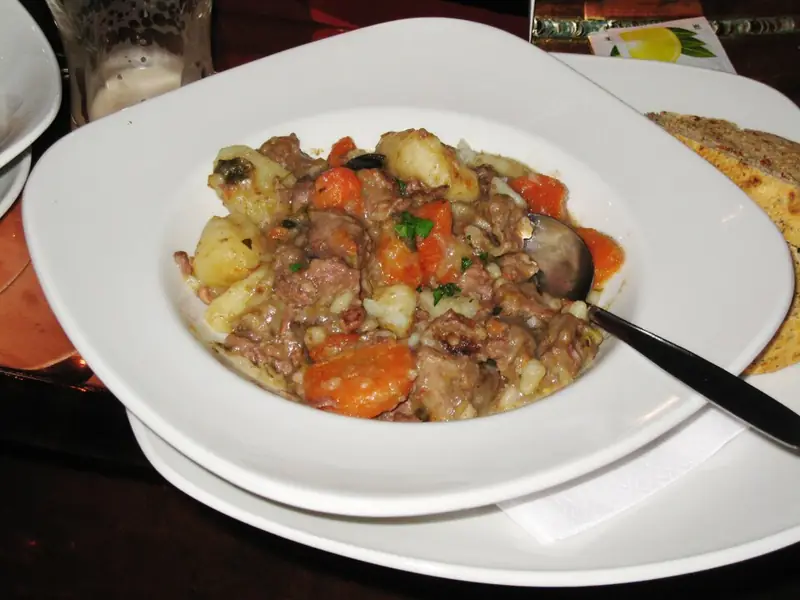

Фото: charles Haynes, CC BY-SA 2.0

Овощное рагу
Картошка, кабачок, морковь и перец, тушённые в томате до мягкости
50 мин4 порц.228 ккал на порциюБ 5 · Ж 8 · У 33Русская кухня
Продукты на 4 порц.
- Картофель4 шт
- Кабачок1 шт
- Морковь1 шт
- Лук репчатый1 шт
- Перец болгарский1 шт
- Помидоры2 шт
- Томатная паста1 ст. л.
- Чеснок2 зуб.
- Растительное масло2 ст. л.
- Вода1 стак.
- Соль1 ч. л.
- Перец чёрный молотыйпо вкусу
- Лавровый лист по желанию1 шт
- Укроп по желаниюпо вкусу
Как готовить
- Нарежьте картофель, кабачок и перец кубиками по 2 см, лук и морковь мельче, помидоры дольками.
- Налейте масло в толстостенную кастрюлю или сотейник, положите лук и морковь, держите на среднем огне 3-4 минуты, помешивая. Затем сразу добавьте остальное, отдельно не обжаривая.
- Добавьте картофель, перец, томатную пасту и воду, посолите, перемешайте.
- Накройте крышкой и тушите на слабом огне 15 минут.
- Положите кабачок, помидоры и лавровый лист, тушите ещё 15-20 минут, пока картофель не станет мягким и нож не будет входить легко.
- Добавьте рубленый чеснок, поперчите, выключите огонь и дайте постоять под крышкой 5 минут. Посыпьте укропом.
Совет. Кабачок кладите позже картофеля, иначе он развалится в кашу. В холодильнике рагу хранится 3 дня и на второй день вкуснее.